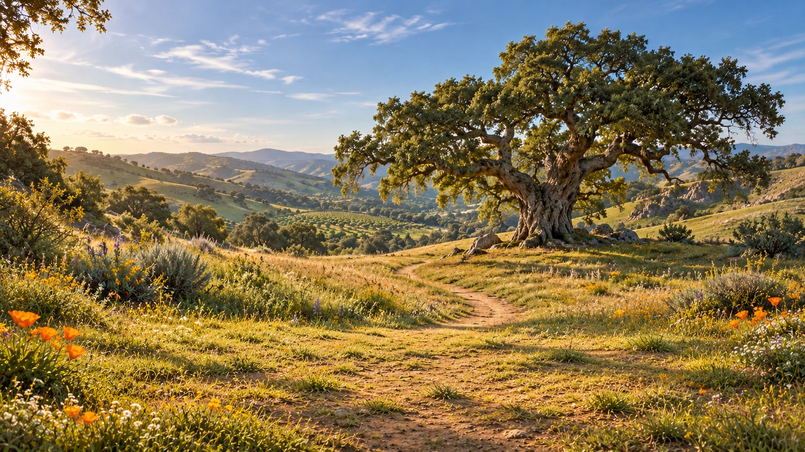

Memory Gate
/ The Red Kite
Fictional concept rehearsal · 2D
California's Central Coast foothills
One afternoon. One old friend.
We can stay here.
Motion and sample playback are paused.
Continue when ready
Elena's afternoon
Sample line 1 of 4
The Red Kite
Next story line
→
Read sample aloud
Optional browser voice; this is not an original family recording.